#1131: [WV] clear Negative (people or cases)
Issue number 1131
karaschechtman opened this issue on March 5, 2021, 12:12 PM PST
Labels Data quality
State or US: WV
Describe the problem
We can the history of West Virginia's Negative (people or cases). The number mixes units and is no longer needed since totalTestResults are no longer calculated via positive+negative.
Link to data source N/A deleting data
Comments
#1131: [WV] clear Negative (people or cases)
Issue number 1131
karaschechtman opened this issue on March 5, 2021, 12:12 PM PST
Labels Data quality
State or US: WV
Describe the problem
We can the history of West Virginia's Negative (people or cases). The number mixes units and is no longer needed since totalTestResults are no longer calculated via positive+negative.
Link to data source N/A deleting data
Comments
#1130: [WV] backfill total tests (PCR)
Issue number 1130
karaschechtman opened this issue on March 5, 2021, 12:00 PM PST
Labels Data quality
State or US: WV
Describe the problem Backfill total tests (PCR) back to march from data scraped from WV's dashboard
Link to data source https://github.com/COVID19Tracking/covid19-datafetcher/blob/data/wv_lab_tests.csv
Comments
#1130: [WV] backfill total tests (PCR)
Issue number 1130
karaschechtman opened this issue on March 5, 2021, 12:00 PM PST
Labels Data quality
State or US: WV
Describe the problem Backfill total tests (PCR) back to march from data scraped from WV's dashboard
Link to data source https://github.com/COVID19Tracking/covid19-datafetcher/blob/data/wv_lab_tests.csv
Comments
#822: [WV] Fill out the probable cases time series where possible
Issue number 822
muamichali opened this issue on September 11, 2020, 6:23 AM PDT
Labels Data quality
State or US: West Virginia
Describe the problem CTP added the confirmed cases column on 4/29 and the probables column on 7/28. West Virginia started separating confirmed and probable cases on 5/22. Before 5/22, all cases reported on WV dashboard were confirmed.
CTP did not capture confirmed & probable between 5/22 and 6/4 Backfill: No because we do not have a source because screenshots do not capture hover.
Action Plan
-
Backfill probables from 6/5 to 7/27 by using positive - confirmed.
-
Fill the gap in the timeseries by carrying over confirmed from 5/22 to 6/4, because we know there were a minimum of that many confirmed. Do not touch probables because we don't know what was going on with those (we know there were some from Slack, but not how many because we cannot access the screenshots)
-
Backfill confirmed from 3/18/2020 to 4/29/2020 from the Positives field because we know they were the same.
Comments
#769: [WV] SVP Fixes: Move total test values from "Total PCR Tests (People)" to "Total Tests (PCR)" and fill in values for 5/2-5/12 from screenshots
Issue number 769
jaclyde opened this issue on August 16, 2020, 4:02 PM PDT
Labels Data quality Historical Data stale
State: West Virginia
Describe the problem: The state confirmed that WV has reported Total Tests in specimens on 7/7, so we are moving the Total Test data to the specimens metric from the people metric. Additionally, we missed recording the Total Test Numbers from 5/2-5/12, however we have screenshot of the WV dashboard from those days, and used them to fill in the missing data points.
Comments
Screenshots:
https://covid-tracking-project-data.s3.us-east-1.amazonaws.com/state_screenshots/WV/WV-20200512-124717.png https://covid-tracking-project-data.s3.us-east-1.amazonaws.com/state_screenshots/WV/WV-20200511-122437.png https://covid-tracking-project-data.s3.us-east-1.amazonaws.com/state_screenshots/WV/WV-20200510-122345.png https://covid-tracking-project-data.s3.us-east-1.amazonaws.com/state_screenshots/WV/WV-20200509-122516.png https://covid-tracking-project-data.s3.us-east-1.amazonaws.com/state_screenshots/WV/WV-20200508-122543.png https://covid-tracking-project-data.s3.us-east-1.amazonaws.com/state_screenshots/WV/WV-20200507-122532.png https://covid-tracking-project-data.s3.us-east-1.amazonaws.com/state_screenshots/WV/WV-20200506-122520.png https://covid-tracking-project-data.s3.us-east-1.amazonaws.com/state_screenshots/WV/WV-20200505-122442.png https://covid-tracking-project-data.s3.us-east-1.amazonaws.com/state_screenshots/WV/WV-20200504-122329.png https://covid-tracking-project-data.s3.us-east-1.amazonaws.com/state_screenshots/WV/WV-20200503-122355.png https://covid-tracking-project-data.s3.us-east-1.amazonaws.com/state_screenshots/WV/WV-20200502-122443.png
Before: 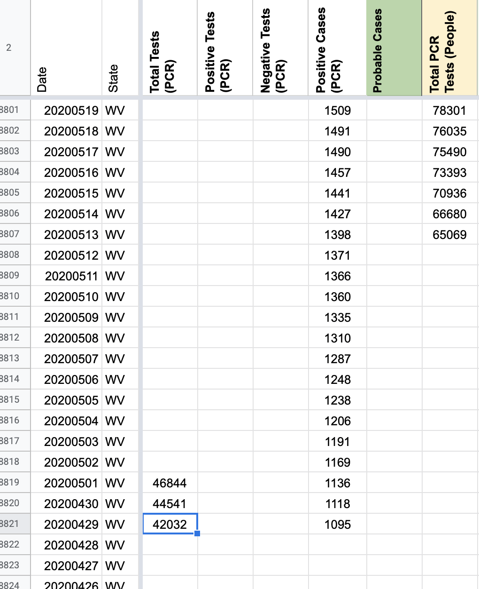 After Adding Missing Data 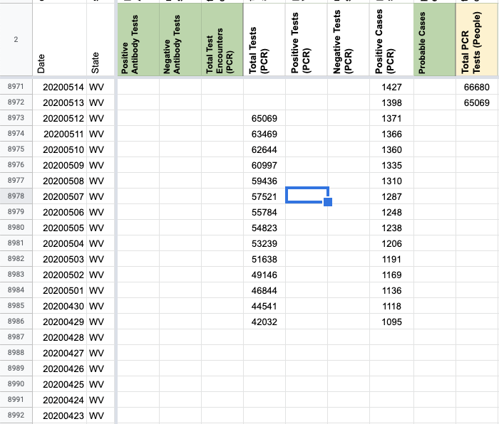 After Move: 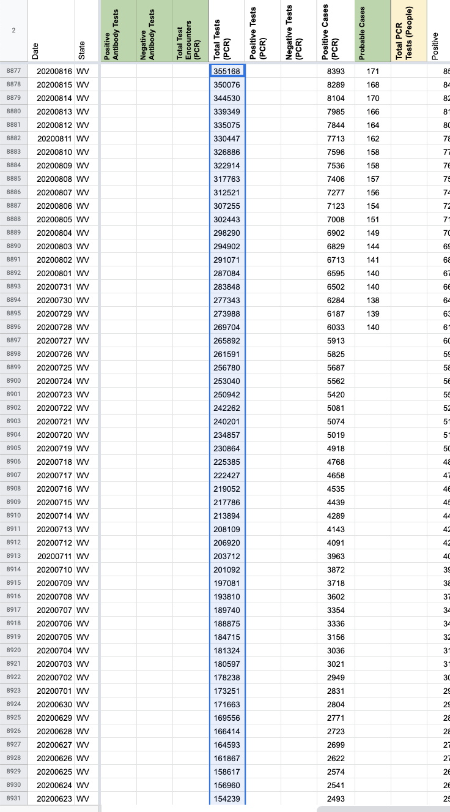
Updates DC'd on slack: https://covid-tracking.slack.com/archives/C012C4BEAR4/p1597435481418200
Keeping Issue open to see about options for back fill prior to 4/29.
This issue has been automatically marked as stale because it has not had recent activity. It will be closed if no further activity occurs. Thank you for your contributions!
This issue has been closed because it was stale for 15 days, and there was no further activity on it for 10 days. You can feel free to re-open it if the issue is important, and label it as "not stale."
#646: [WV] 7/17 Recoveries
Issue number 646
brianskli opened this issue on July 18, 2020, 1:48 PM PDT
Transposition issue on 7/17 recovery count from WV, resulting in red cell on 7/18
Comments
Noting that secondary and tertiary screenshots are broken. Correct number acquired through data graph on WV state website: 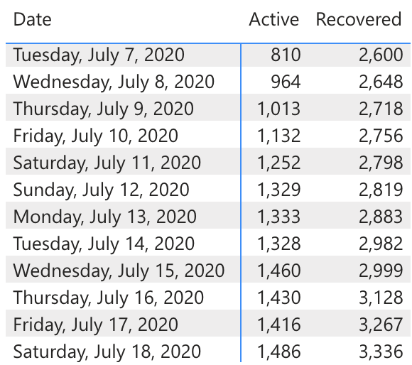 Number switched from 3627 to 3267. Before: 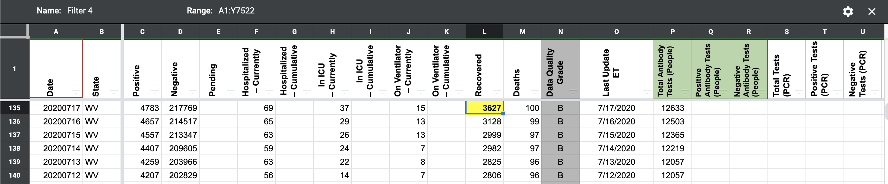 After: 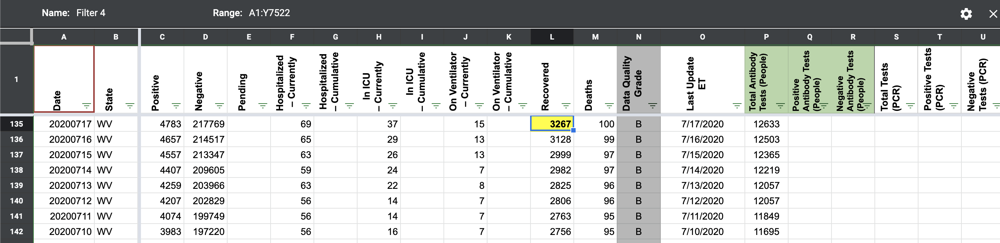
#601: [WV] SVP Tests Historicals
Issue number 601
the-daniel-lin opened this issue on July 10, 2020, 8:56 AM PDT
Labels Missing Data PCL/SVP Historicals not stale
State or US: West Virginia
Describe the problem We've been historically recording "Confirmatory Lab Test" numbers under "Total PCR Tests (People)." However, from 7/7 outreach, the figures under WV "Lab Test Trends" tab refer to specimens tested, NOT people.
Link to data source https://dhhr.wv.gov/COVID-19/Pages/default.aspx
Comments
This issue has been automatically marked as stale because it has not had recent activity. It will be closed if no further activity occurs. Thank you for your contributions!
Didn't see this issue earlier. This issue was taken care of in Issue #769
#599: [WV] PCL Cases Historical
Issue number 599
the-daniel-lin opened this issue on July 10, 2020, 8:23 AM PDT
Labels Backfill Missing Data PCL/SVP Historicals not stale
State or US: West Virginia
Describe the problem
-
Historical "Positive Cases (PCR)" goes back until 4/29. There's a gap from 5/22 - 6/4 (https://github.com/COVID19Tracking/issues/issues/555) that we may be able to fill now.
-
States Daily antibody test values go back until 5/23, but our long formulas sheet dates back to 4/12. The WV website has hover-over line graphs that date back to 3/17 for cases and 3/11 for lab tests.
-
Under the "Positive Case Trends" tab, cumulative historical cases on the WV website combine probable and confirmed cases, but in the graph underneath, historical daily cases are separated by probable and confirmed cases. Since WV updates data multiple times every day and backfills their own data consistently, current CTP historical values for cases and testing do not match with the hover-over line graphs on the WV website.
Link to data source Dashboard: https://dhhr.wv.gov/COVID-19/Pages/default.aspx Daily Press Releases (at 10AM and 5PM): https://dhhr.wv.gov/News/2020/Pages/default.aspx
Comments
This issue has been automatically marked as stale because it has not had recent activity. It will be closed if no further activity occurs. Thank you for your contributions!
This issue has been closed because it was stale for 15 days, and there was no further activity on it for 10 days. You can feel free to re-open it if the issue is important, and label it as "not stale."
IN #822 we filled out the gap in "Positive Cases (PCR)" from 5/22 to 6/4 by carrying over values since the screenshots do not enable us to hover.
#555: [WV] PCL Cases Historicals in States Daily
Issue number 555
muamichali opened this issue on June 29, 2020, 6:33 AM PDT
Labels PCL/SVP Historicals
State or US: WV
Describe the problem
Cases
NOTE: Between 5/23 and 6/4 the values for positive cases (PCR) are missing
Link to data source Discovered while working on #550
Comments
Per Slack thread, between 5/22 and 6/4, we don't have the values for Positive Cases (PCR). Prior to 5/22, WV was reporting confirmed cases only. From 6/5 onward, we were able to access confirmed vs. probable cases from WV.
Removed Positive Cases (PCR) for 5/22: BEFORE: 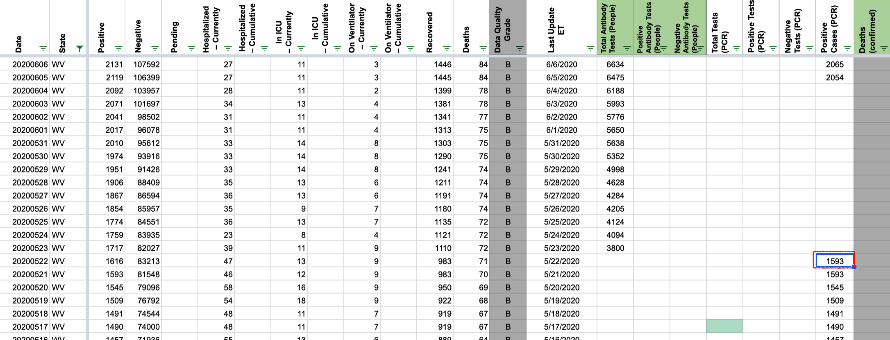
AFTER: 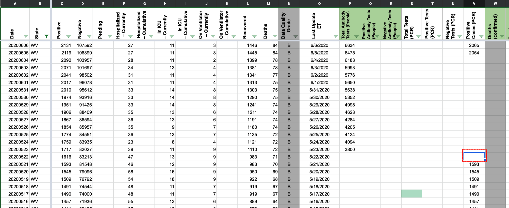
Added Positive Cases (PCR) for to 5/2
BEFORE:
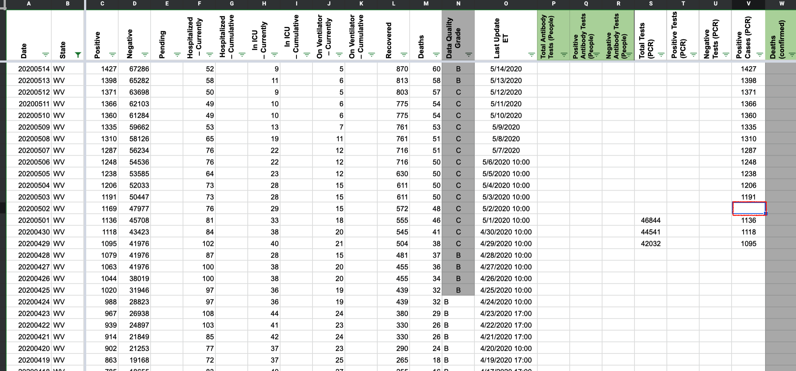
AFTER: 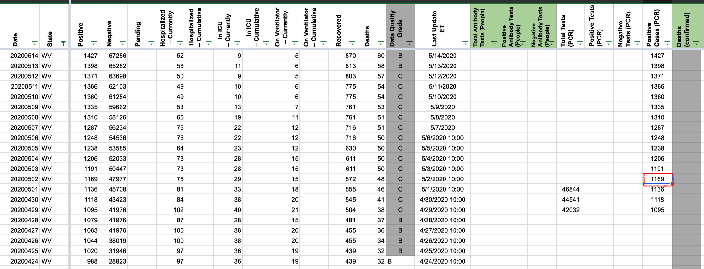
#550: [WV] PCL Historicals and WS2
Issue number 550
jesseandersonumd opened this issue on June 26, 2020, 7:16 AM PDT
Labels PCL/SVP Historicals
Death values are historically recorded in both the "Deaths" and "Deaths (Confirmed)" columns for WV. However, WV’s death values are unclear about what they represent, so they should only be recorded in the main "Deaths" field.
5/12: CTP started reporting same values for deaths (confirmed) and deaths.
Comments
Deaths
Updated States Daily
BEFORE 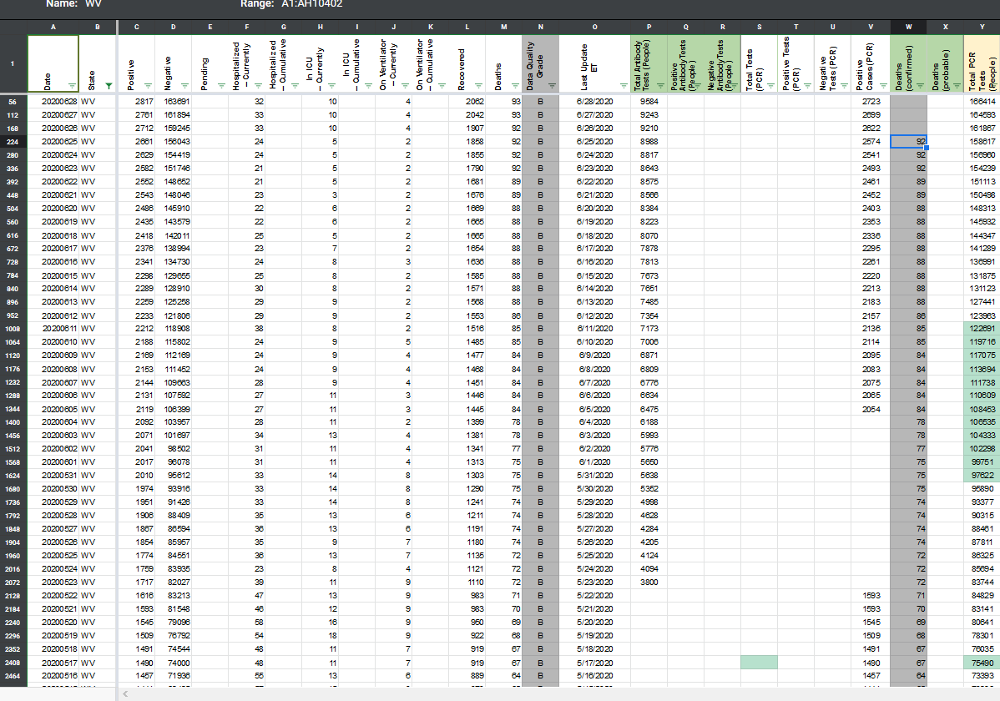
AFTER 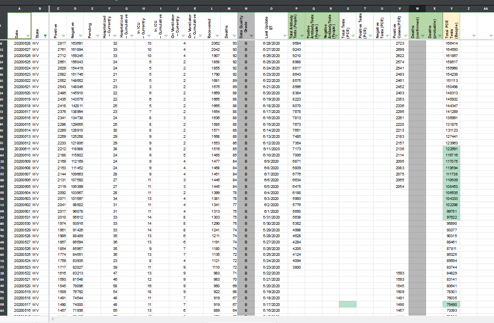
Note: I found that there is an issues with Positive Cases (PCR) and opened a separate ticket to address that. #555
#503: [WV]Change internal tracking of probable vs confirmed deaths - they do not separate
Issue number 503
muamichali opened this issue on June 19, 2020, 11:07 AM PDT
Labels not stale
https://covid-tracking.slack.com/archives/C012C4BEAR4/p1592489962311800
Comments
This issue has been automatically marked as stale because it has not had recent activity. It will be closed if no further activity occurs. Thank you for your contributions!
This issue has been automatically marked as stale because it has not had recent activity. It will be closed if no further activity occurs. Thank you for your contributions!
This issue has been closed because it was stale for 15 days, and there was no further activity on it for 10 days. You can feel free to re-open it if the issue is important, and label it as "not stale."
WV began to report probable/confirmed deaths on 8/12 , but CTP began capture on 8/13 (https://covid-tracking.slack.com/archives/CUQ4MMTPD/p1597351199389100).
archive.org doesn't allow us to see the actual breakdown from 8/12, so we can't backfill 8/12.
There's a stretch of 8 days from 5/4 - 5/11 where we have confirmed deaths. I was unable to find anything about them, but they're exactly the same as the lumped death column. I deleted the values from the confirmed deaths column from 5/4-5/11.
#447: [WV] Backfill antibody tests for WV
Issue number 447
space-buzzer opened this issue on May 23, 2020, 5:59 PM PDT
Labels stale
New dashboard has antibody tests in addition to diagnosis tests: https://app.powerbigov.us/view?r=eyJrIjoiNzhjMzUyZGItN2ZjMi00ZDQ2LWExM2MtMzE3ZTEzNTE2MzdiIiwidCI6IjhhMjZjZjAyLTQzNGEtNDMxZS04Y2FkLTdlYWVmOTdlZjQ4NCJ9&pageName=ReportSection9f5bc3be6e9ebda92968
Here's the dated CSV from the dashboard:
date,lab_results,antibody
"2020-03-11",1,0
...
"2020-04-05",711,1
...
"2020-05-18",2154,110
"2020-05-19",1793,195
"2020-05-20",3223,232
"2020-05-21",1446,313
"2020-05-22",2058,239
"2020-05-23",1092,56
These are daily numbers, will add a cumulative sum.
If, PCR testing needs to be backfilled as well, this table covers both.
Comments
This issue has been automatically marked as stale because it has not had recent activity. It will be closed if no further activity occurs. Thank you for your contributions!
This issue has been closed because it was stale for 15 days, and there was no further activity on it for 10 days. You can feel free to re-open it if the issue is important, and label it as "not stale."
#419: Data Quality - WV cumulative positive tests does not match value on DHHR
Issue number 419
ggrowe opened this issue on May 13, 2020, 6:17 PM PDT
From the external support message: ...there also seem to be discrepancies concerning cumulative positive tests. When I compare the amount of change between your totals for 5/11 and 5/12, I get 5 cases. But when I hover over the "Cumulative Number of Laboratory Confirmed Cases" on the DHHR site, the "cases" number for 5/12 (which I take to be "new cases being reported as of 5/12) is 14.
Note from GG on the support team: This is a bit too deep in the weeds for me, can you help explain? Thx!
Comments
Hi GG,
This is a publishing time issue. The numbers of cases that we report in WV 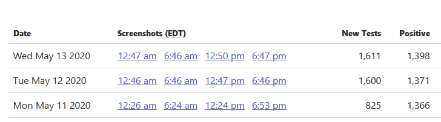 match the number of positive cases that the state reported around 4pm EST.
https://covidtracking.com/screenshots/WV/WV-20200511-122437.png
https://covidtracking.com/screenshots/WV/WV-20200512-124717.png
#327: WV has revised the total number of tests down on 4/28
Issue number 327
muamichali opened this issue on April 29, 2020, 6:28 AM PDT
Labels Historical Data
Historical data should be updated in our system
https://dhhr.wv.gov/COVID-19/Pages/default.aspx
Comments
Returned the historical calculations, after WV update their total tests 4/30
Temporary 'correction': 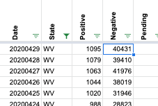
Returned to where it should be: 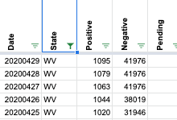
#201: WV: cumulative hospitalization, ICU, and ventilator numbers are unreliable
Issue number 201
dpthurst opened this issue on April 16, 2020, 1:22 PM PDT
Labels stale
The data for West Virginia for cumulative hospitalization, cumulative ICU, and cumulative ventilator numbers come from multiplying the posted percentages by the total number of cases. But the percentages are based on "completed investigations", not total cases, so this data is unreliable and should be removed.
(Current hospitalization, ICU, and ventilator numbers come from a separate page that is up-to-date.)
Comments
This issue has been automatically marked as stale because it has not had recent activity. It will be closed if no further activity occurs. Thank you for your contributions!
This issue has been closed because it was stale for 15 days, and there was no further activity on it for 10 days. You can feel free to re-open it if the issue is important, and label it as "not stale."
Changes (12).txt